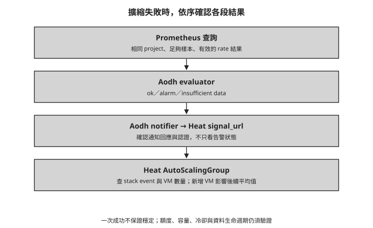
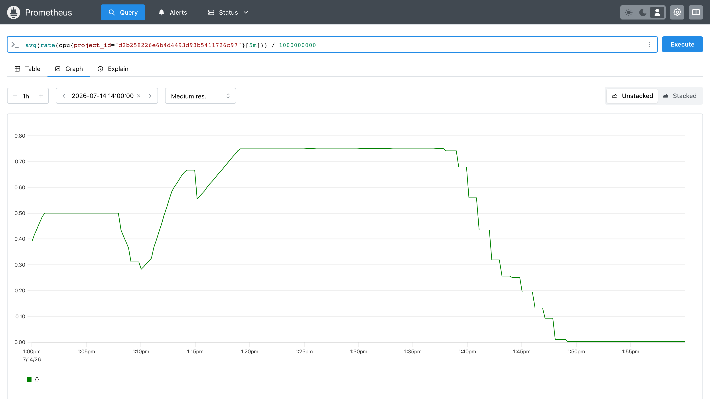

Day 29: 告警與自動擴縮——從查詢結果追到 VM 增減¶
Prometheus 圖上 CPU 已經上升，VM 數量卻沒有變。可能是告警查不到資料，也可能是通知已送出、Heat 卻拒絕執行。這一章把 Day 28 的計量資料接到 Aodh，再讓 Heat 調整 VM 數量。讀完之後，你能分段查詢、告警狀態、通知回應與 stack 事件，找出擴縮停在哪裡。
開始之前¶
需要 Day 28 的 Ceilometer／Prometheus、Day 27 的 team-a 身分與網路，以及 Day 5 的 Heat。指令在 Kolla 部署主機執行，位址、UUID 與 inventory 請換成自己的值。切換 admin、system 與 team-a 身分時，沿用 Day 27 的認證變數清理方式。
Day 27 把 team-a 的 servers 限為 2，本章卻要觀察最多 3 台。先以 system 管理員查出 team-a 的 servers limit ID，將該筆上限調到至少 3，並確認 VCPU、記憶體與磁碟額度可容納三台 m1.tiny。可依 Nova 的 limit 更新方式使用 openstack limit set --resource-limit 3 <servers-limit-id>。不能把 registered limit 改大就假設覆寫值也跟著變。
第一段用 Day 28 的 meter-vm 測告警；建立 autoscaling stack 前再刪除它，並確認 team-a 沒有其他無關 VM。因為本章以 project 分組，其他 VM 的指標也會影響平均值。Day 28 所述 Pushgateway 舊序列的清理與新鮮度問題仍然存在。
先看要追查的四段¶
Aodh 是 OpenStack 的告警服務，將 Day 28 的計量結果轉成通知，讓 Heat 依規則執行擴縮，免去人工判讀數據後再操作 Heat。
Aodh 定期評估一條 alarm（告警規則），再依結果決定 state（狀態）：ok、alarm 或 insufficient data。Action 是指定狀態下要呼叫的通知端點；本章把它設為 Heat 的擴縮訊號網址。
圖中每一段都要有可觀察的結果，才能把 VM 增減連回告警。

alarm 不表示通知已送達，通知回 200 也不單獨表示新 VM 已完成。另一方面，新增 VM 會改變後續樣本與平均值，因此擴縮本身也會影響下一次判斷。
步驟 1：部署 Aodh¶
echo 'enable_aodh: "yes"' | sudo tee -a /etc/kolla/globals.yml
source ~/kolla-venv/bin/activate
kolla-ansible deploy -i ~/all-in-one --tags aodh
確認 api、evaluator、notifier、listener 容器健康。evaluator 負責算條件，notifier 負責發送動作；之後要分別看這兩個元件的日誌。
步驟 2：建立查詢並設定 Prometheus 連線¶
用哪些標籤選工作負載¶
其他教材可能以 Gnocchi 資源 metadata 選群組，例如：
metadata: {"metering.server_group": {get_param: "OS::stack_id"}}
type: OS::Aodh::GnocchiAggregationByResourcesAlarm
建立告警查詢前，先沿用 Day 28 的指令查看 Pushgateway 原始指標，確認自己的 cpu 序列有哪些標籤：
以下 CPU 樣本可用來對照欄位；查詢時請使用自己資料中的標籤值：
__name__ = cpu
job = openstack-telemetry
project_id = d2b258226e6b4d4493d93b5411726c97
resource_id = dd3cfe9a-0301-470c-bef5-c8620dc4e3f5
user_id = 1384190dc01245789ea1465816402146
這筆樣本沒有 server_group，因此不能直接照搬 Gnocchi 的 metadata 分組方式。本章以 team-a 的 project_id 選定範圍，前提是該 project 只承載這組實驗。這不是 Prometheus 不能儲存自訂 label，而是目前資料沒有送出該 label；同一專案混合多種工作負載時，需要另外設計可靠的分組資料。
在 CLI 虛擬環境安裝外掛，再以管理員建立一條只測「是否有 cpu 序列」的告警。先清除前一章殘留的認證變數。如果不同 domain 有同名的 team-a，project show 要加 --domain day27-corp（修正後的寫法本課沒有實跑）：
pip install python-aodhclient
source /etc/kolla/admin-openrc.sh
TEAM_A=$(openstack project show team-a -f value -c id)
openstack alarm create --type prometheus --name day29-vm-count \
--query "count(cpu{project_id=\"$TEAM_A\"})" \
--comparison-operator ge --threshold 1 --evaluation-periods 1 --granularity 60
原紀錄建立成功，但 evaluator 找不到 Prometheus：
這個版本的客戶端讀設定檔，不透過 Keystone 服務目錄尋找 Prometheus。建立它需要的檔案：
PW=$(sudo grep '^prometheus_password:' /etc/kolla/passwords.yml | awk '{print $2}')
sudo mkdir -p /etc/openstack
sudo tee /etc/openstack/prometheus.yaml << EOF
host: admin:${PW}@10.0.0.4
port: 9091
EOF
host 內嵌 basic-auth 憑證，是本課版本驗證過的整合方式；這份檔案應限制為必要帳號可讀，避免把密碼放進日誌或分享檔案。不要因此關閉 Prometheus 認證。若密碼包含 URL 保留字元，要先確認客戶端接受的編碼方式，本課沒有測這個情況。
Aodh 在容器內，還要將設定掛入：
sudo tee -a /etc/kolla/globals.yml << 'EOF'
aodh_extra_volumes:
- "/etc/openstack:/etc/openstack:ro"
EOF
kolla-ansible deploy -i ~/all-in-one --tags aodh
重新部署後查 evaluator 日誌，確認不再是找不到設定；若改為 401，表示已連到服務，但認證仍失敗，見疑難排解：Prometheus 回 401。
步驟 3：先驗告警兩種結果¶
查看測試規則的狀態與原因：
這個查詢結果達到門檻，所以是 alarm。再把門檻提高，讓目前資料不滿足條件：
查 API 的原始規則。<alarm-id> 換成剛建立的告警 ID：
TOKEN=$(openstack token issue -f value -c id)
AODH=$(openstack endpoint list --service alarming --interface public -f value -c URL)
curl -s -H "X-Auth-Token: $TOKEN" "$AODH/v2/alarms/<alarm-id>" | python3 -m json.tool
"state": "ok",
"prometheus_rule": {
"comparison_operator": "ge",
"threshold": 99.0,
"query": "count(cpu{project_id=\"d2b258226e6b4d4493d93b5411726c97\"})"
}
state 回到 ok，而且 prometheus_rule 中的門檻是更新後的值。這確認 evaluator 能依這份查詢改變判斷。測試後可以把門檻改回 openstack alarm update day29-vm-count --threshold 1；它不負責後面的擴縮動作。
步驟 4：調整讀數更新與查詢窗口¶
後面的查詢使用 rate()，由累積 CPU 時間估計每秒速率，再除以十億將奈秒換成秒，得到平均使用的 CPU 核心數。
這裡要分清三種間隔：Ceilometer 多久讀到新用量、Prometheus 多久 scrape 一次，以及 Aodh 多久評估一次。rate() 需要的是 Prometheus 窗口內足夠的樣本；即使 Ceilometer 沒更新，Pushgateway 舊值仍可能被多次抓取。因此不能單憑 Ceilometer 的 300 秒輪詢推論一分鐘窗口只有一個樣本。
原設定的 polling 段落是：
原操作將它改為 60 秒，並使用五分鐘的 rate 窗口：
sudo mkdir -p /etc/kolla/config/ceilometer
sudo docker exec ceilometer_central cat /etc/ceilometer/polling.yaml \
| sed 's/interval: 300/interval: 60/' \
| sudo tee /etc/kolla/config/ceilometer/polling.yaml
kolla-ansible deploy -i ~/all-in-one --tags ceilometer
這會提高來源讀數的更新頻率，但仍要確認實際 scrape 間隔、資料是否持續到達，以及是否有已刪 VM 的舊序列。先在 Prometheus 執行同一條查詢，確認有合理結果，再把它交給 Aodh；不同窗口的原始觀察保留在疑難排解：insufficient data。
步驟 5：讓 Heat 接收擴縮訊號¶
Heat 的 AutoScalingGroup 保存同規格 VM 的目標數量與上下限；ScalingPolicy 定義一次增加或減少多少台，以及動作之間的 cooldown（冷卻時間）。cooldown 以秒為單位，限制同一政策過於頻繁地執行；本章設定為 60 秒，政策執行後須等待冷卻時間結束，才能再次執行。Aodh 的 PrometheusAlarm 則把符合條件的結果送給政策。
先確認 Heat 支援這些資源型別：
| OS::Aodh::Alarm |
| OS::Aodh::CompositeAlarm |
| OS::Aodh::EventAlarm |
| OS::Aodh::GnocchiAggregationByMetricsAlarm |
| OS::Aodh::GnocchiAggregationByResourcesAlarm |
| OS::Aodh::GnocchiResourcesAlarm |
| OS::Aodh::LBMemberHealthAlarm |
| OS::Aodh::PrometheusAlarm |
清單同時有 Gnocchi 與 Prometheus 型別；目前安裝的 Heat 支援清單中的資源型別，不表示各後端都已部署。
將完整範本存為 ~/day29-autoscale.yaml。關鍵段落如下：
cpu_high:
type: OS::Aodh::PrometheusAlarm
properties:
query:
str_replace:
template: 'avg(rate(cpu{project_id="PID"}[5m])) / 1000000000'
params:
PID: { get_param: project_id }
comparison_operator: gt
threshold: 0.4
alarm_actions:
- str_replace:
template: trust+url
params:
url: { get_attr: [scale_out, signal_url] }
project_id 限定 team-a，門檻 0.4 是每條 VM CPU 序列速率的平均值。trust+url 經字串替換形成 trust+http://...，讓 Aodh 透過 Keystone trust（委派授權）取得 token，再通知 Heat 原生 API。
建立 stack 前，在 team-a 身分刪除 Day 28 的 meter-vm，確認額度和指標範圍符合開頭前提，再載入 team-a openrc。TEAM_A 必須是同一個專案的 ID：
source ~/team-a-openrc.sh
openstack stack create day29-as -t ~/day29-autoscale.yaml \
--parameter project_id=$TEAM_A --wait
VM 的 user_data 會執行一段 CPU 工作後停止。下面保留原操作的通知、stack 更新與數量變化：
13:08:28 aodh notifier → gets response: 200 OK
13:08:30 ASG 巢狀 stack UPDATE started
13:08:43 UPDATE completed → 2 台
13:08:44 scale_out Remaining as alarm due to 1 samples outside threshold,
most recent: 0.40572612101851857
13:13:28 aodh notifier → gets response: 200 OK
13:13:45 scale_out most recent: 0.6274204384722222 → 3 台(max_size)
13:43:36 scale_in Transition to ok due to 1 samples inside threshold,
most recent: 0.25709375 → 2 台
13:48:36 scale_in Remaining as ok ... most recent: 0.010958333333333334
→ 1 台(min_size)
數量從 1 增至 3，再回到 1；notifier 成功回應與 Heat 更新事件共同支持這次擴縮觀察。只看數量還不夠，因為滾動替換也可能短暫增加 VM。
同一組查詢的圖形顯示負載上升、之後下降：

新 VM 初期用量較低，可能拉低平均值，但不能只憑曲線凹陷就斷定是哪個事件造成。這份範本的 repeat_actions 沿用預設，仍在同一狀態時可以重複送動作，所以縮容可分次回到 min_size。
擴與縮使用同一個門檻，且各自 cooldown 為 60 秒，不能保證不會來回擴縮。若要用於真實服務，需要評估啟動時間、分開的擴縮門檻、持續條件與冷卻時間；本課只驗這一輪，沒有測振盪抑制或容量不足的恢復。
疑難排解¶
evaluator 找不到 Prometheus 設定¶
症狀：Can't find prometheus host and port configuration。原因：本課客戶端讀 prometheus.yaml，Kolla 沒替它產生這份設定。修法：依步驟 2 寫檔並確認容器內可讀；只在 Keystone 新增 endpoint 不會修好這個讀檔問題。
已能找到 Prometheus，卻回 401¶
本課客戶端設定沒有獨立帳密欄位。驗證過的設定形狀是：
修法：確認帳密與位址，再確認掛載後容器讀到同一份檔案。嵌入 URL 的密碼仍須當作機密，不應把完整 URL 複製進排錯報告。
Aodh 轉成 alarm，Heat 卻拒絕通知¶
原紀錄的 alarm_url 通知失敗：
<ErrorResponse><Error><Type>Sender</Type><Code>AccessDenied</Code>
<Message>User is not authorized to perform action</Message></Error></ErrorResponse>
這個 URL 走 EC2 簽章驗證，日誌顯示 Keystone 拒絕：
INFO heat.api.aws.ec2token Authenticating with http://10.0.0.4:5000/v3/ec2tokens
ERROR heat.api.aws.ec2token Failed to obtain a Keystone token from None:
keystoneauth1.exceptions.http.Unauthorized: (HTTP 401)
改用 Heat 的 signal_url，並讓 Aodh 用 trust 通知器處理：
alarm_actions:
- str_replace:
template: trust+url
params:
url: { get_attr: [scale_out, signal_url] }
可列出目前安裝的通知器：
sudo docker exec aodh_notifier python3 -c "
from importlib.metadata import entry_points
for ep in entry_points(group='aodh.notifier'): print(ep.name)"
這份環境有 trust+http／trust+https。修正後仍須核對 notifier 回應與 Heat event，不能只看範本建立成功。
告警停在 insufficient data¶
先直接執行同一條 PromQL，比較窗口：
for W in 1m 2m 3m 5m; do
curl -s -u admin:$PW --get http://10.0.0.4:9091/api/v1/query \
--data-urlencode "query=avg(rate(cpu{project_id=\"$TEAM_A\"}[$W]))"
done
這個結果顯示一分鐘窗口算不出 rate，但不能單憑窗口結果將原因歸為 Ceilometer 的 polling 間隔。回步驟 4 檢查來源更新、scrape 樣本、label 條件與窗口。
insufficient data 不會走本章的 alarm／ok actions；Aodh 另有 insufficient_data_actions，本範本未設定。正式部署需要另外處理「資料不夠」的通知，不能把沒有擴縮動作當成沒有問題。整體反應時間也受這三種間隔、窗口平滑與 VM 建立時間影響，並非固定相加或相乘即可算出。
完整範本¶
下面保留這輪驗證使用的範本。它是 CPU 工作的擴縮示範，沒有負載平衡器、應用健康檢查或正式服務的擴縮穩定性設計：
heat_template_version: 2021-04-16
description: Day 29 - PromQL 驅動的自動擴縮
parameters:
project_id:
type: string
description: 用 project_id 收斂告警範圍(Prometheus 路線沒有 server_group label)
resources:
asg:
type: OS::Heat::AutoScalingGroup
properties:
min_size: 1
max_size: 3
desired_capacity: 1
resource:
type: OS::Nova::Server
properties:
image: cirros
flavor: m1.tiny
networks:
- network: team-a-net
user_data_format: RAW
user_data: |
#!/bin/sh
# 開機後燒 CPU 30 分鐘再自己停
# cirros 的 busybox 沒有 timeout 指令,只能自己算時間
(
END=$(( $(date +%s) + 1800 ))
while [ "$(date +%s)" -lt "$END" ]; do
i=0; while [ $i -lt 200000 ]; do i=$((i+1)); done
done
) &
scale_out:
type: OS::Heat::ScalingPolicy
properties:
adjustment_type: change_in_capacity
auto_scaling_group_id: { get_resource: asg }
cooldown: 60
scaling_adjustment: 1
scale_in:
type: OS::Heat::ScalingPolicy
properties:
adjustment_type: change_in_capacity
auto_scaling_group_id: { get_resource: asg }
cooldown: 60
scaling_adjustment: -1
cpu_high:
type: OS::Aodh::PrometheusAlarm
properties:
description: team-a 平均 CPU 超過 0.4 顆核就加機器
query:
str_replace:
template: 'avg(rate(cpu{project_id="PID"}[5m])) / 1000000000'
params:
PID: { get_param: project_id }
comparison_operator: gt
threshold: 0.4
alarm_actions:
- str_replace:
template: trust+url
params:
url: { get_attr: [scale_out, signal_url] }
ok_actions:
- str_replace:
template: trust+url
params:
url: { get_attr: [scale_in, signal_url] }
這份 CirrOS 範本用迴圈計時，因為原先使用 timeout 的版本沒有執行成功：
Nova 的 ACTIVE 不保證 user_data 成功；讀數一直為零時，也要查 openstack console log show 的 VM 開機日誌。
完成實驗後¶
先清除 OS_AUTH_TYPE、OS_APPLICATION_CREDENTIAL_ID、OS_APPLICATION_CREDENTIAL_SECRET 與 OS_SYSTEM_SCOPE，載入 ~/team-a-openrc.sh，以 team-a 身分用 Heat 刪除 day29-as stack，確認其 VM 與 stack 管理的告警都已移除。接著再次清除上述認證變數，載入 /etc/kolla/admin-openrc.sh，以步驟 2 建立告警的管理員身分刪除獨立的 day29-vm-count 測試告警。刪除資源後，依 Day 28 檢查 Pushgateway 的殘留序列；下一章不能把仍在曝露的舊值視為有效用量。若調高了 team-a 額度，依實際後續需求保留或恢復原值。
想一想¶
- Aodh 是 alarm，VM 數量卻沒有變。你會先取得哪三種結果，而不是重建告警？
- 同一個 project 多了一批不相關的 VM，這份平均 CPU 查詢還能代表原工作負載嗎？
- Ceilometer 每五分鐘更新一次，但 Prometheus 每分鐘抓 Pushgateway。rate 的樣本點數與讀數的新鮮度有什麼不同？
小結¶
自動擴縮要把資料、判斷與動作分開驗證。先確認查詢範圍和樣本，再看 Aodh 狀態、notifier 回應及 Heat 事件。擴縮成功一輪不等於策略已能穩定控制正式負載；專案額度、舊序列、VM 啟動時間與重複動作，都會改變結果。
延伸閱讀¶
想再深入，可以從這幾份開始：
- Aodh 2025.1：告警狀態與通知器。
- Heat 資源型別：ScalingPolicy、PrometheusAlarm 與 repeat_actions。ScalingPolicy 的 cooldown 說明列出冷卻時間的單位。
- Prometheus rate：計數器速率與窗口的意義。
- Kolla 監控整合：服務側部署設定。
下一步¶
Day 30 使用相同租戶標籤，讓 CloudKitty 依規則計算費用。告警需要有效資料，費用計算也一樣；讀得到指標只是開始。